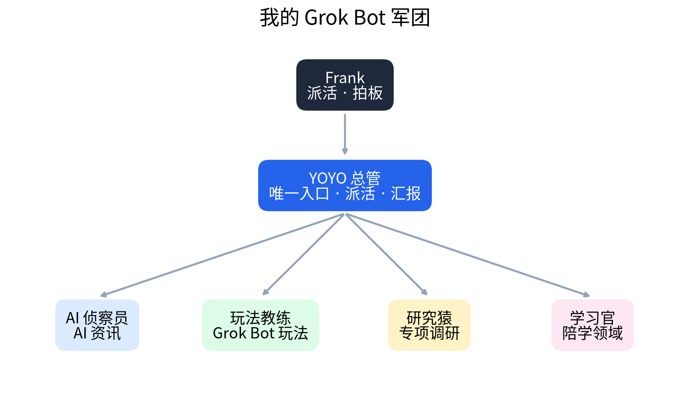

效果：一次真实的 Bot 圆桌会
问题：试用期结束后，要不要为 Grok Bot 付费？
- 🎮 玩法教练（价值方）：多 Bot 长期记忆 + 互相派活、持久云电脑、定时任务 + 专属邮箱，是付费的独有价值
- 🔬 研究猿（事实方）：官方没公布各档额度；按周重置；可设按量付费上限；取消政策没写明
- 🧭 总管裁决：先不付，用满试用期看数据。信号：定时任务结果每天真的会看 · 直接派活省掉 ≥3 次转发 · 日额度约 ≤10%
🧩 团队成员
🧭 YOYO 总管
唯一入口：拆任务、派活、验收、汇报。新建与不可逆操作先问我。
🛰️ AI 侦察员
搜集 X / GitHub / B 站 / YouTube 的 AI 动态，只读不写。
🎮 玩法教练
搜罗社区玩法，按实际条件过滤成可落地的步骤。
🔬 研究猿
点名才开工，追一手来源，写结论先行、带出处的短报。
📚 学习官
一问一答带我学透一个领域，沉淀成学习卡片。
🗺️ 架构

📐 设计原则
单一入口
人只跟总管说话，不用记谁负责什么。
职责卡
只干什么 / 坚决不干什么 / 交付标准，Bot 之间不抢活。
不当传话筒
Bot 之间直接同步，做完统一汇报。
交付物落盘
长内容存文件，对话只放结论和链接。
人在关键节点拍板
新建、发信、删除、付费、发布，必须我同意。
省额度铁律
定时任务每天 ≤2 次，命令行优先，派活一次说清。
🧪 真实案例
① Bot 圆桌会沉淀成技能
提案方 + 质疑方各自独立作答一次，总管裁决、落盘、定复盘时间。
② 浏览器挂了，命令行绕行
浏览器网络通道不稳定，改用命令行抓 GitHub Trending，再用 Python 画图，照样交付。
③ 借鉴社区，再做减法
参考 12 个 Bot 的「内容军团」，只取研究猿和学习官；少开 Bot，多装技能。
④ 踩坑与反思
平台风控、API 付费、浏览器不稳；总管自作主张做了没人要的网站 → 定下「新建先问」规则。
🛠️ 想自己搭一套？
- 先建一个总管 Bot 当唯一入口
- 给每个 Bot 写职责卡：只干什么 / 不干什么 / 交付标准
- 需要并行或隔离上下文才开新 Bot，其余用技能补
- 定好人工拍板的边界
🚀 下一步
- 邮件派活入口：手机发邮件，总管拆分派活、回汇总
- 接力审稿 + 额度账本：第 7 天出「哪些活值得付费」报告
- 微信接入：待安全审查